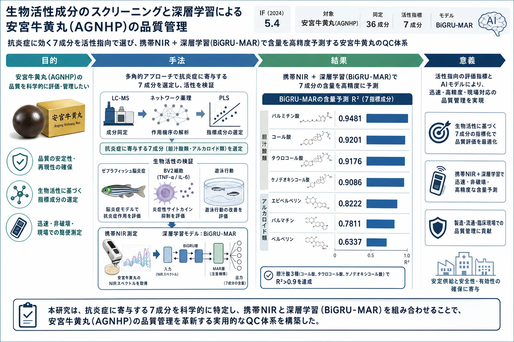

生物活性成分のスクリーニングと深層学習による安宮牛黄丸(AGNHP)の品質管理

<!-- 方針: ほぼ全訳＋必要に応じた補足。原文構成に沿って訳出。「> 補足:」は訳者注。 -->
書誌情報
- 原題: Screening of bioactive compounds and deep learning-driven quality control of Angong Niuhuang pills
- 著者: Mengyin Tian, Xiaobo Ma, Lei Nie, Hengchang Zang（山東大学薬学院 NMPA薬物製品技術研究評価重点実験室／国家糖工程研究センター ほか, 中国）
- 掲載: Journal of Ethnopharmacology 351 (2025) 120095. https://doi.org/10.1016/j.jep.2025.120095
- インパクトファクター: 5.4（Journal of Ethnopharmacology, JCR 2024 / Clarivate）
- 受理経過: 受領 2025-02-12 / 改訂 2025-05-30 / 採録 2025-06-02 / オンライン公開 2025-06-07
補足: AGNHP = 安宮牛黄丸（Angong Niuhuang Pill）。pCms = proprietary Chinese medicines（中成薬・既製漢方製剤）。IS = 虚血性脳卒中。NIR = 近赤外分光。BiGRU-MAR = 双方向GRU＋多頭アテンション＋残差機構を組み合わせた本研究の深層学習モデル。本論文は活性スクリーニング＋AI(深層学習)QCを融合した研究論文。
要旨（Abstract）
民族薬理学的関連性: 安宮牛黄丸(AGNHP)は脳卒中など脳疾患に広く用いられる著名な漢方複方製剤だが、生薬成分の複雑さと製法の多様性から品質管理が難しい。
目的: 深層学習駆動の品質管理法を探索し、AGNHP中の主要活性成分の含量を正確・効率的に定量して大規模な品質管理と収量モニタリングを実現する。
方法: LC-MSとネットワーク薬理・PLS(部分最小二乗)解析を組み合わせて活性成分をスクリーニング・検証。抗炎症活性をゼブラフィッシュおよび細胞モデルで検証し、近赤外分光(NIR)と深層学習モデルで品質管理を達成した。
結果: タウロコール酸・ケノデオキシコール酸を含む 7つの主要活性成分 をLC-MSとネットワーク薬理予測でスクリーニング。これらはin vitro/in vivoで有意な抗炎症活性を示した。BiGRU-MARモデルはこれらの含量を実測値と高い一致度で正確に予測でき、AGNHPのQCにおける有効性を示した。
結論: AGNHPの完全な品質管理体系を構築し、科学的・標準化された品質分析・管理を促進した。中成薬(pCms)の大規模QCの基盤となる重要な理論的・応用的価値をもつ。
1. 序論（Introduction）
脳卒中は罹患率・障害率・死亡率が高い神経疾患で、虚血性脳卒中(IS)は全脳卒中の 80% を占め死亡率も高い。漢方(TCM)は多標的・多成分・全体調節・高い安全性という利点をもち、脳卒中治療で重要な役割を果たす。AGNHPは脳卒中・熱性けいれん等に広く用いられてきた古典的複方で、牛黄・郁金・水牛角・麝香・珍珠・梔子・黄連・黄芩・朱砂・雄黄・氷片(竜脳) からなる。
中成薬(pCms)の品質検査には2つの大きな課題がある——①指標物質と薬効の関連が不明確（組成が複雑で鍵となる薬効成分を捉えにくい）、②検査作業が膨大で技術・装置の制約から包括的・正確な検査が難しく品質問題を適時に検出しにくい。スペクトル−薬効相関解析により、指紋ピークと薬効が密接に関連することが示されている。深層学習は優れたデータ処理能力からpCmsの精密検出に大きな可能性をもち、CNN(画像同定)・RNN(製造工程の品質変化予測)などがTCMのQCに応用されてきた。本研究はAGNHPのIS治療活性成分をスクリーニング・評価し、携帯NIRと深層学習で含量定量の精度・効率を高める枠組みを提案する。
2. 材料と方法（Materials and Methods）
2.1 試料調製（処方組成）
AGNHPの処方は——牛黄 100 g、郁金(Curcuma aromatica) 100 g、水牛角濃縮粉 200 g、麝香(Moschus) 25 g、珍珠(pearl) 50 g、梔子(Gardenia jasminoides) 100 g、黄連(Coptis chinensis) 100 g、黄芩(Scutellaria baicalensis) 100 g、朱砂(cinnabar) 100 g、雄黄(realgar) 100 g、氷片(borneol) 25 g。配合原則に従い牛黄−黄連の比率を変え、牛黄の品種も変えて 計20バッチ を調製。試料100 mgを メタノール:DMSO:水(1:1:1) 10 mL に懸濁し 200 W で 60分 超音波抽出、0.22 μm 膜濾過。
2.2 LC-MS条件
- 装置: Agilent 1290 Infinity II-Ultivo、ESI源、MRM(定量)・フルスキャン監視
- カラム: Waters ACQUITY UPLC BEH C18（100 × 2.1 mm, 1.7 μm）、カラム温度 30 ℃
- 移動相: A=アセトニトリル、B=0.1%ギ酸水。グラジエント: 0–5 min 3–15%A / 5–12 min 15–17%A / 12–22 min 17–25%A / 22–24.5 min 25%A / 24.5–32.5 min 25–40%A / 以降 40–90%A（平衡化10 min）
- 流速 0.25 mL/min、注入量 10 μL
- MS: イオン源電圧 正 3.0–5.0 kV／負 −3.0–5.0 kV、キャピラリー温度 350 ℃、コーン電圧 10–50 V、ネブライザーガス(GS1) 30–60 psi・補助ガス(GS2) 10–30 psi、質量範囲 m/z 50–1000
2.3–2.5 ゼブラフィッシュ実験
- 安全性: 48 hpf の健常胚を用い、ブランク／溶媒(DMSO)／AGNHP(200・400・600・800・1200 μg/L)群、各3反復、28.0 ± 0.5 ℃、2日間投与。心拍の有無で生死判定。
- 脳炎症活性: 最大非致死濃度 100・200 μg/L を投与濃度とし、化合物の実験用量は最大無毒性量から 25・50 μg/mL に設定。モデル群はポナチニブ 2 μg/mL。脳領域のマクロファージ数を計数。
- 行動実験: 5 dpf 以降、Zebralab で20分間(60秒毎)の遊泳軌跡・総移動距離を記録。
2.6 PLS解析
質量分析ピーク応答強度を独立変数(X)、薬効データを従属変数(Y)としてPLSを適用し、少数データの多重共線性を解消、背景干渉を低減して予測精度を高めた。
2.7–2.9 ネットワーク薬理・ドッキング
Swiss Target Predictionで成分標的を収集し、UniProtで遺伝子情報を取得。DisGeNET・GeneCardsで脳卒中(stroke)関連標的を収集(Homo sapiensのみ)。ISとAGNHPの交差標的をSTRING(medium confidence, combined score > 0.9)に投入しPPIネットワークを構築、Cytoscape 3.9.0でコア標的を抽出。上位6標的についてTCMSP由来構造・RCSB PDB構造を用い AutoDock Vina 1.5.7／PyMOL 3.1 で分子ドッキング。
2.10 in vitro 抗炎症活性
BV2ミクログリア細胞をDMEM(+10%FBS+1%P/S)、5%CO₂・37 ℃で培養。4群——対照／モデル(LPS 2 μg/mL, 24 h)／AGNHP(LPS後、選定化合物 最適濃度 50 μM で24 h)／アスピリン(LPS後、5 mM で24 h)。上清の TNF-α・IL-6 をELISA で定量(各3反復)。
2.11–2.12 NIRスペクトル・含量定量
光ファイバーモードで試料の3か所をランダム測定。SW2560-050MRC(OtO Photonics)で 900–1700 nm・分解能5 nm、各3回スキャン。7成分の回収率・RSD、検量線(線形回帰)を取得。標準品は上海源葉生物より購入。
2.13–2.16 アルゴリズム・評価
- データ拡張: 正規化データに 平均0・標準偏差0.01 のガウスノイズを付加し、拡張倍率 ×10 で訓練データを10倍に拡張。
- モデル: GRU(ゲート付き回帰ユニット)の変種である 多層双方向GRU(Bi-GRU) に多頭アテンション機構を組み合わせ、各層出力後に残差結合・層正規化を付加(BiGRU-MAR)。
- 評価指標: MSE・MAE・決定係数R²。
- 比較モデル: 線形回帰・決定木・ランダムフォレスト・KNN・誤差逆伝播(BP)・勾配ブースティング。
- 統計: GraphPad Prism 9.0、2群はt検定、多群は一元配置ANOVA、mean ± SD、P < 0.05 を有意。
3. 結果（Results）
3.1 試料情報解析
LC-MSで成分を解析し、由来である牛黄・黄連から 計36成分 を同定（下表 Table 1）。
Table 1. 試料中で同定された成分（全36成分）
| No. | 相対時間(min) | 名称 | 分子式 | 実測分子量 | Δ(ppm) |
|---|---|---|---|---|---|
| 1 | 2.05 | Lysine（リシン） | C6H14N2O2 | 146.1053 | −0.374 |
| 2 | 2.4 | Taurine（タウリン） | C2H7NO3S | 125.147 | 0.984 |
| 3 | 2.68 | Phenylalanine | C9H11NO2 | 165.19 | 0.65 |
| 4 | 2.9 | Histidine | C6H9N3O2 | 155 | 1.39 |
| 5 | 4.34 | Leucine | C6H13NO2 | 131.17 | 0.354 |
| 6 | 7.4 | Palmitic acid（パルミチン酸） | C16H32O2 | 256.424 | 1.543 |
| 7 | 11.98 | Protocatechuic acid | C7H6O4 | 153.0199 | 1.665 |
| 8 | 12.1 | Ferulic acid | C10H10O4 | 193.0508 | 1.305 |
| 9 | 13.15 | Aporphine alkaloid | C20H24NO4 | 342.1706 | 0.605 |
| 10 | 16.09 | Tetrahydroberberine | C20H21NO4 | 340.1548 | 0.415 |
| 11 | 16.8 | Tryptophan | C11H12N2O2 | 204.0900 | 1.898 |
| 12 | 17.12 | Tetrahydropalmatine | C21H25NO4 | 356.1863 | 0.645 |
| 13 | 17.26 | Noroxyhydrastinine | C10H9NO3 | 192.0661 | 0.61 |
| 14 | 18.05 | Taurocholic acid（タウロコール酸） | C26H45NO7S | 514.285 | 1.896 |
| 15 | 18.5 | Berlambine | C20H17NO5 | 352.1184 | 0.491 |
| 16 | 19.06 | Hydrastine | C21H21NO6 | 368.1498 | 0.501 |
| 17 | 19.35 | Groenlandicine | C19H16NO4+ | 322.1078 | 0.436 |
| 18 | 20.1 | Jatrorrhizine | C20H20NO4 | 338.1392 | 0.535 |
| 19 | 20.2 | Coptisine | C19H14NO4+ | 320.0923 | 0.556 |
| 20 | 20.85 | Epiberberine（エピベルベリン） | C20H18NO4+ | 336.1236 | 0.595 |
| 21 | 21.08 | (5β,7α,12α)-7,12-Dihydroxy-3-oxocholan-24-oic acid | C24H38O5 | 406.556 | 1.396 |
| 22 | 21.85 | Glycocholic acid | C26H43NO6 | 465.63 | 2.514 |
| 23 | 22.03 | 7-Ketolithocholic acid | C24H38O4 | 390.56 | 2.424 |
| 24 | 22.45 | Chenodeoxycholic acid（ケノデオキシコール酸） | C24H40O4 | 392.57 | 1.739 |
| 25 | 22.75 | Cholic acid（コール酸） | C24H40O5 | 408.57 | 1.565 |
| 26 | 23.05 | Taurochenodeoxycholic acid | C26H45NO6S | 498.2909 | 1.595 |
| 27 | 23.32 | Taurodeoxycholic acid | C26H45NO6S | 499.7 | −2.09 |
| 28 | 23.55 | Glycochenodeoxycholic acid | C26H43NO5 | 449.62 | 1.75 |
| 29 | 23.78 | Glycodeoxycholic acid | C26H43NO5 | 449.6003 | −1.375 |
| 30 | 23.92 | Deoxycholic acid | C24H40O4 | 392.57 | 3.23 |
| 31 | 24.54 | Glaucentrine | C20H23NO4 | 340.1549 | 0.515 |
| 32 | 24.7 | Berberine（ベルベリン） | C20H18NO4 | 336.1236 | 0.654 |
| 33 | 24.85 | Glycocholic acid | C26H43NO4 | 433.63 | 1.818 |
| 34 | 25.16 | Arachidonic acid | C20H32O2 | 304.467 | 1.313 |
| 35 | 25.5 | Palmatine（パルマチン） | C21H22NO4 | 352.1551 | 0.725 |
| 36 | 25.8 | Lithocholic acid | C24H40O3 | 376.57 | −0.711 |
3.2 脳炎症モデルの評価
トランスジェニックゼブラフィッシュで脳内マクロファージ遊走を観察。モデル群(ポナチニブ)では脳領域にマクロファージが集積(P < 0.0001 vs 対照)。投与濃度の増加に伴いマクロファージ数・集積が有意に減少(P < 0.005 vs モデル群)。36成分のうち タウロコール酸・ケノデオキシコール酸・コール酸・パルミチン酸・エピベルベリン・ベルベリン・パルマチン が PLSRモデルで VIP値 > 1。PLSRの予測は P = 0.7300 で実測と有意差なく良好。
3.3 品質マーカーのスクリーニングと検証
脳抗炎症活性と関連する 7成分 を選定: タウロコール酸(化合物1)・ケノデオキシコール酸(2)・コール酸(3)・パルミチン酸(4)・エピベルベリン(5)・ベルベリン(6)・パルマチン(7)。PPIネットワークは 154ノード・534エッジ。DEGREEとDMNCの交差度が高い6標的——TNF・IL6・ALB・EGFR・IL1B・MMP9——をコア標的とした。鍵標的(TNF-α: 2AZ5、IL6: 1ALU、ALB: 4L9K、EGFR: 6LUD、IL1B: 4×37、MMP9: 1ITV)へのドッキングで、潜在Q-markerの結合エネルギーはいずれも < −5(良好な結合)。
3.4 TNF-α・IL-6 濃度測定
ドッキングからTNF-α・IL6がISに対するAGNHPの鍵標的と示された。BV2細胞で、モデル群のTNF-α・IL6は対照群より有意に高く(P < 0.0005)、7成分はTNF-α・IL6を抑制してISに治療効果を示した。
3.5 ゼブラフィッシュ行動評価
6 dpf で運動行動を測定。モデル群はポナチニブにより移動軌跡・総移動距離が減少したが、AGNHPの7成分で明確に改善した。
3.6–3.8 深層学習モデルと結果
3層の双方向GRU＋多頭アテンション＋残差結合からなる BiGRU-MAR を構築。7成分の含量予測結果は下表(Table 2)。特に タウロコール酸・ケノデオキシコール酸・コール酸でR² > 0.9(理想値1に極めて近い)。BiGRU-MARはMAE・MSEでも他モデルを有意に上回った。アブレーション試験(Table 3)では、アテンションや残差結合のいずれを除いてもMSE/MAEが上昇しR²が低下し、各モジュールが含量予測精度に不可欠と示された。
Table 2. 比較モデルの予測性能（BiGRU-MAR と各機械学習モデル）
| 指標成分 | モデル | MSE | MAE | R² Score |
|---|---|---|---|---|
| タウロコール酸 | BiGRU-MAR | 0.0002 | 0.0101 | 0.9176 |
| Random Forest | 0.0005 | 0.0148 | 0.7611 | |
| Gradient Boosting | 0.0003 | 0.0121 | 0.8582 | |
| Linear Regression | 0.0008 | 0.0216 | 0.6260 | |
| ケノデオキシコール酸 | BiGRU-MAR | 0.0001 | 0.0020 | 0.9086 |
| KNN | 0.0001 | 0.0030 | 0.8094 | |
| コール酸 | BiGRU-MAR | 0.0750 | 0.1952 | 0.9201 |
| Random Forest | 0.0782 | 0.2365 | 0.9029 | |
| Gradient Boosting | 0.0733 | 0.2045 | 0.9089 | |
| パルミチン酸 | BiGRU-MAR | 0.0055 | 0.0556 | 0.9481 |
| BP | 0.0127 | 0.0931 | 0.8508 | |
| エピベルベリン | BiGRU-MAR | 0.0002 | 0.0108 | 0.8222 |
| Linear Regression | 0.0003 | 0.0139 | 0.7247 | |
| ベルベリン | BiGRU-MAR | 0.0036 | 0.0439 | 0.6337 |
| Linear Regression | 0.0023 | 0.0387 | 0.7397 | |
| パルマチン | BiGRU-MAR | 0.0003 | 0.0132 | 0.7811 |
| Random Forest | 0.0003 | 0.0145 | 0.7637 |
補足: 上表は各成分の BiGRU-MAR と代表的な比較モデルの抜粋。原文Table 2には7成分×7モデルの全数値が掲載されている。ベルベリンのみ線形回帰(R²=0.7397)がBiGRU-MAR(0.6337)を上回ったが、他の6成分ではBiGRU-MARが最良または上位だった。
4. 考察・結論（Discussion / Conclusion）
本研究のスクリーニングは 活性指向で、複雑な複方成分から活性成分に焦点を絞ることで薬効に寄与する鍵物質を的確に標的化し、非活性/低活性成分への労力の無駄を避けて研究効率を高めた。鍵活性成分の選定後、ネットワーク薬理で標的・経路を予測し、in vitro細胞実験・in vivo動物モデルで包括的に検証した。携帯NIR分光で迅速・非破壊の品質分析を行い、データ拡張で試料コスト・希少性の問題に対処しつつ予測精度を高めた。BiGRU-MARは複雑データに強く、迅速・高精度の予測を実現し、実製品への適用で指標成分の有効性・正確性を確認した。
限界: BiGRU-MARは複雑データに有効だが解釈性に欠ける（今後改良予定）。また活性成分のスクリーニング・検証体系は包括的だが、治療効果・安全性の正確な評価にはより高感度・特異的な手法が必要。
結論: AGNHPを対象に中成薬の完全なQC体系を構築。7つの主要活性成分を同定・検証し、BiGRU-MARモデルで含量定量の精度・効率を大幅に向上、実製品検証でQC指標の有効性・正確性を確認した。他の中成薬のQCにも新たな手法を提供し、TCM品質管理の標準化を促進する。
補足（実務的示唆）: 本研究の枠組みは「活性指向で指標成分を選ぶ → ネットワーク薬理＋in vivo/in vitroで裏取り → 携帯NIR＋深層学習で日常的に含量を予測」という三段構え。実務的には、HPLC等の確定分析に対し、携帯NIR＋学習済みモデルをスクリーニング/工程内モニタリングに使い、逸脱が疑われるロットを確定分析に回す運用が想定される。ただしモデルの解釈性・外挿性(訓練範囲外のロットへの適用)には注意が必要で、定期的な再キャリブレーションが前提となる。なお朱砂(水銀)・雄黄(ヒ素)・麝香等を含む製剤であり、ここで扱う有機指標成分の管理は安全性管理(重金属等)とは別枠である点に留意。